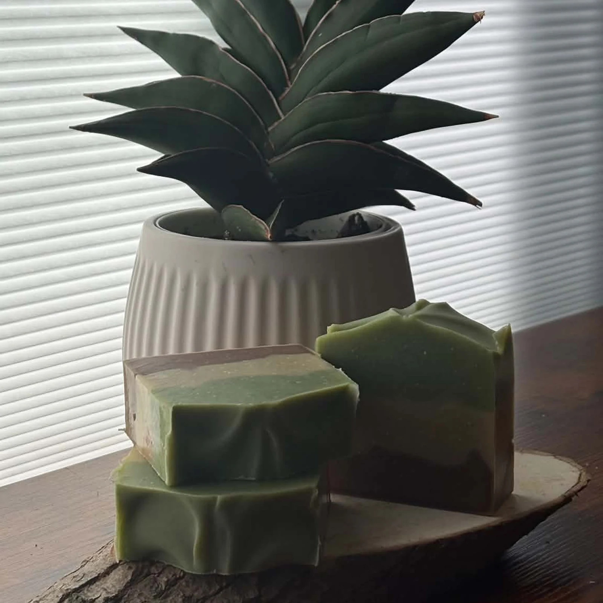

Handcrafted in Gatineau, Québec
Forest

A three-tone forest bar with earthy botanical powders and a crisp blend of woodsy, minty essential oils.
Ingredients
Saponified oils (organic olive oil, shea butter, organic coconut oil, castor oil), steam-distilled essential oils (cedarwood, fir, frankincense, peppermint, eucalyptus), chlorella powder, cocoa powder, kaolin clay.
Browse all products